Build
Adapt accessible, high-resolution spatial-omics technologies for challenging plant tissues.
I develop and apply spatial and single-cell omics to understand how plant cells regulate development, symbiosis, and stress response.
ExpertisePlant spatial omics · Single-cell genomics · Cis-regulatory biology · Crop engineering
Future directionBuilding spatially resolved regulatory maps that enable precise engineering of resilient, resource-efficient crops.
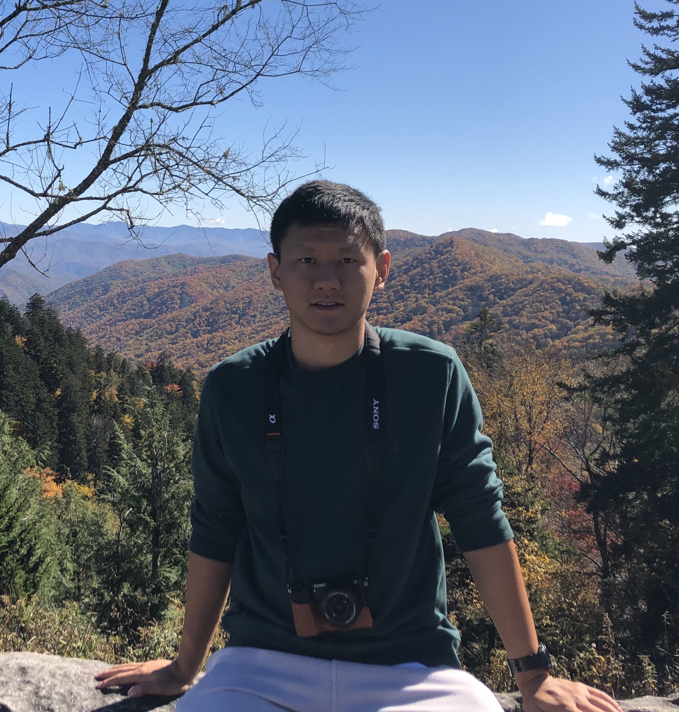
Ziliang Luo, Ph.D.Postdoctoral Fellow in Genetics
Schmitz Lab · University of Georgia
My research connects technology development, cis-regulatory biology, and crop improvement. The long-term goal is to reveal where agronomically important programs operate—and use that knowledge to engineer sustainable traits with cellular precision.
Adapt accessible, high-resolution spatial-omics technologies for challenging plant tissues.
Resolve cell-type-specific regulatory programs across development and environmental response.
Translate regulatory maps into strategies for symbiosis, resilience, and reduced agricultural inputs.
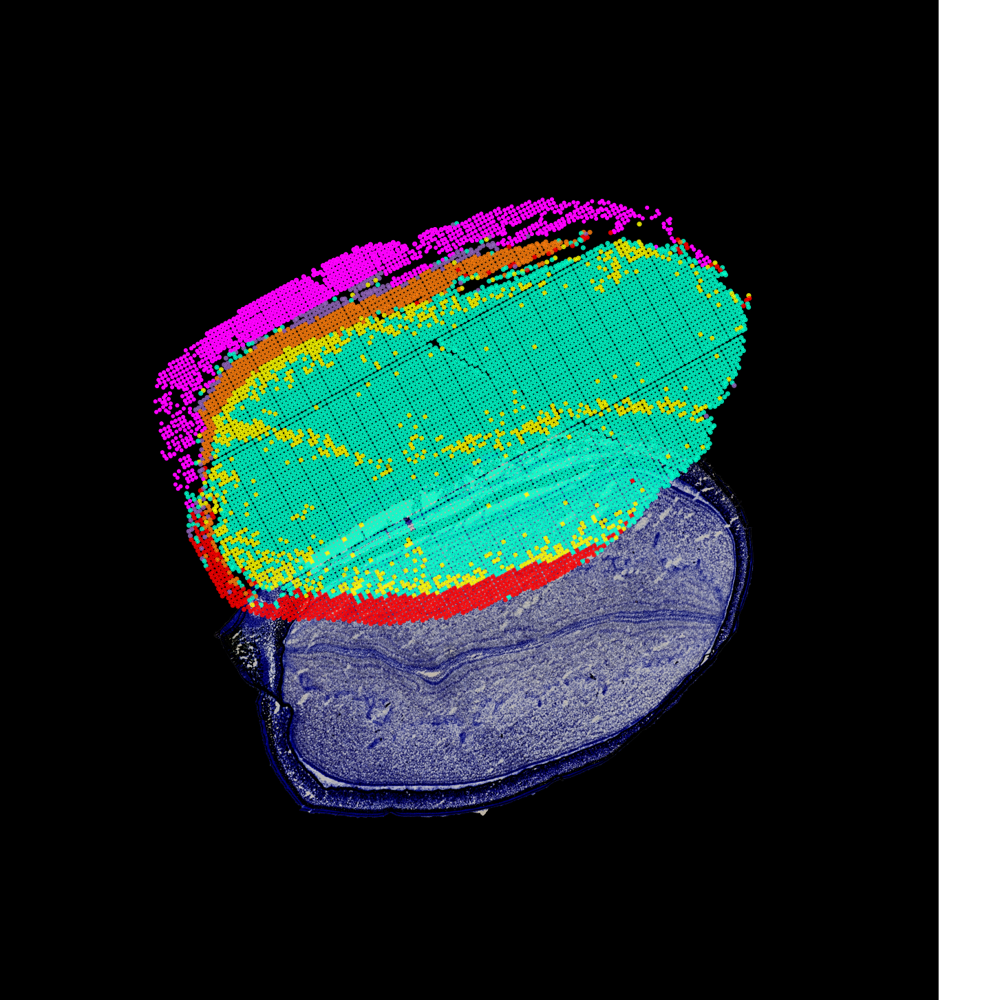
Spatial omics01 — Soybean
We integrated single-cell and spatial transcriptomic and epigenomic data to reconstruct soybean development, linking cell states to regulatory programs across organs and stages.
Read the Cell paper ↗02 — Peanut
My doctoral work combined transcriptomics, methylomics, genetics, and CRISPR/Cas9 hairy-root transformation to study the unusual “crack-entry” infection route used by peanut.
View related work ↗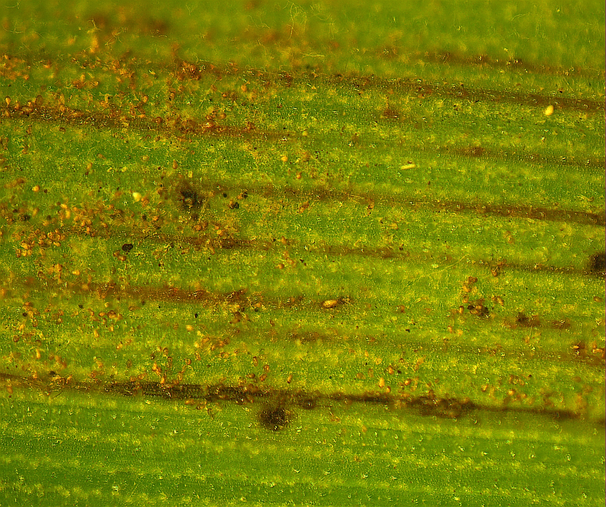
Plant-microbe interactions03 — Sugarcane
I use spatial and single-cell transcriptomics to identify the cell types and regulatory programs that distinguish resistant and susceptible sugarcane—moving from resistance QTLs toward causal genes.
Selected from 30+ peer-reviewed publications. Ziliang Luo is highlighted; * denotes co-first authorship.
Xuan Zhang*, Ziliang Luo*, Alexandre P. Marand*, Haidong Yan, Hosung Jang, et al.
Cell 188, 550–567
Alexandre P. Marand, Luguang Jiang, Fabio A. Gomez-Cano, et al., Ziliang Luo, et al.
Science 388, eads6601
Haidong Yan*, John P. Mendieta*, Xuan Zhang, Ziliang Luo, et al.
Nature Plants 11, 2050–2071
Ziliang Luo and Robert J. Schmitz
STAR Protocols 6, 103790
Ziliang Luo*, Rui Cui*, Carolina Chavarro, et al.
Theoretical and Applied Genetics 133, 1201–1212
Ziliang Luo*, Minghui Wang*, Yumei Long, et al.
Theoretical and Applied Genetics 130, 1569–1585
Teaching & mentorship
Undergraduate mentorship: supervised three student projects in CRISPR/Cas9 hairy-root gene editing and transcriptome analysis of peanut nodulation.
peer-reviewed publications
3undergraduate researchers mentored
Awards
Workshop on Spatial Omics in Plants
Single-Cell Approaches in Plant Biology
Informatics Interest Group, Minnesota Supercomputing Institute
American Society of Sugarcane Technologists
3MT presentation
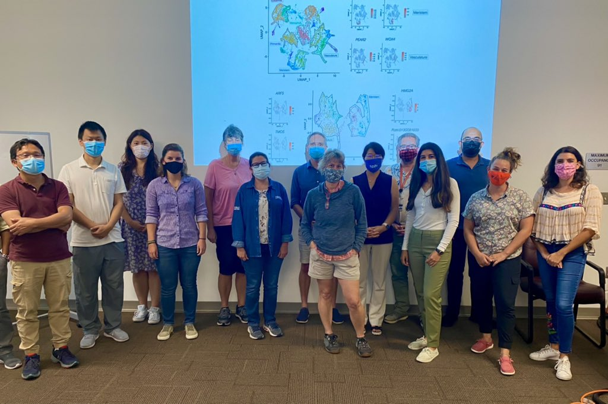
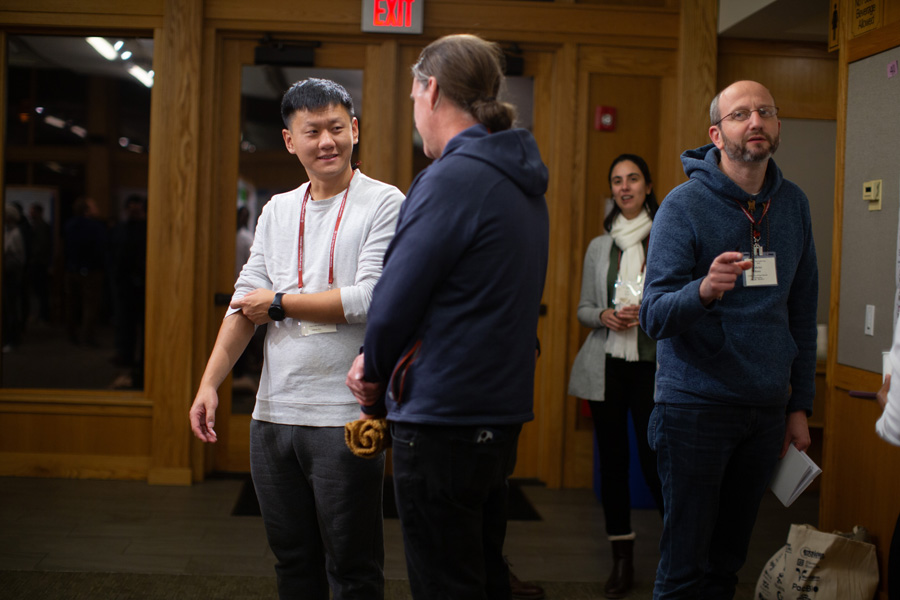
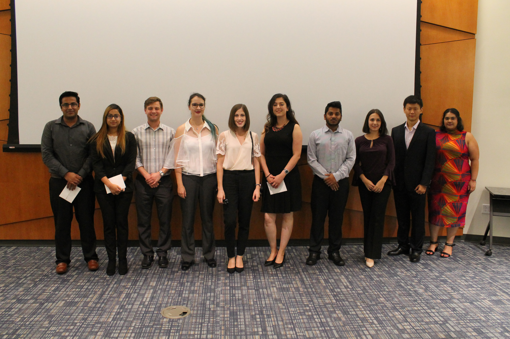
Microscopy, spatial maps, crops, and experiments
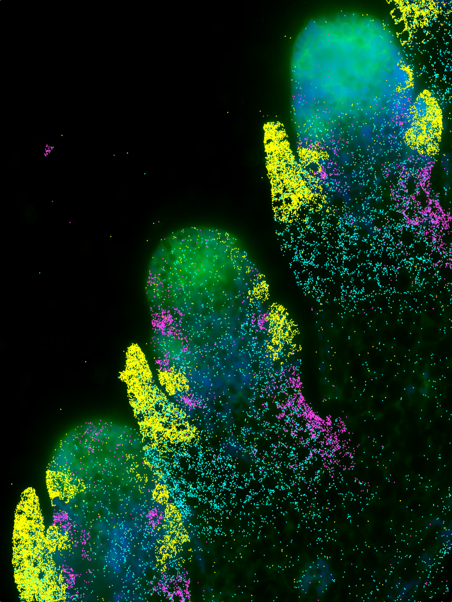

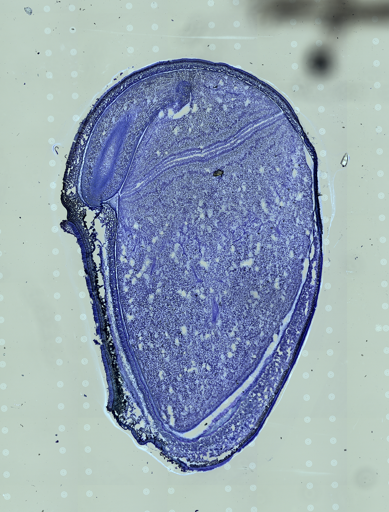
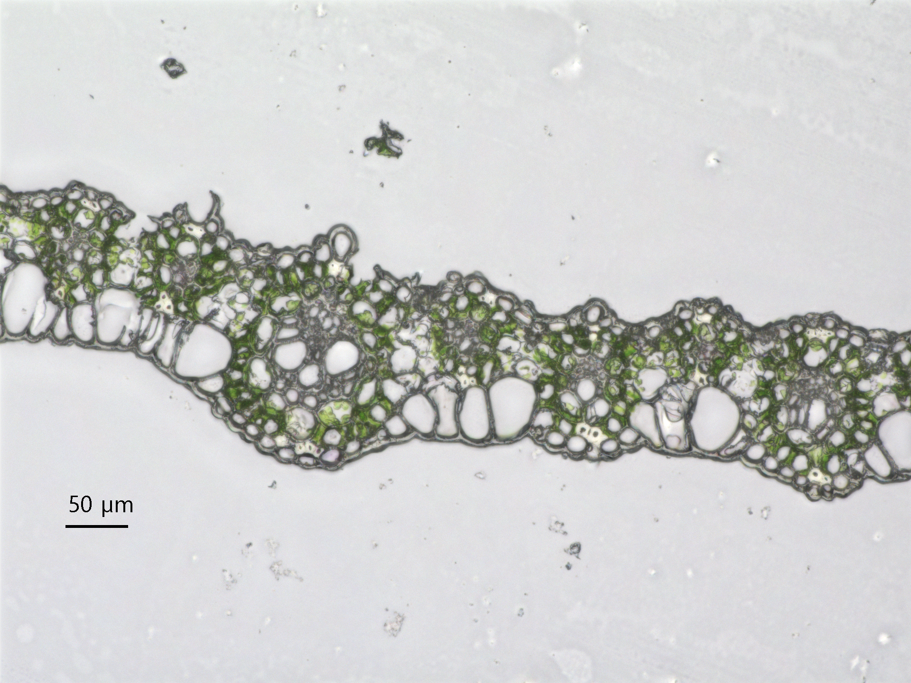
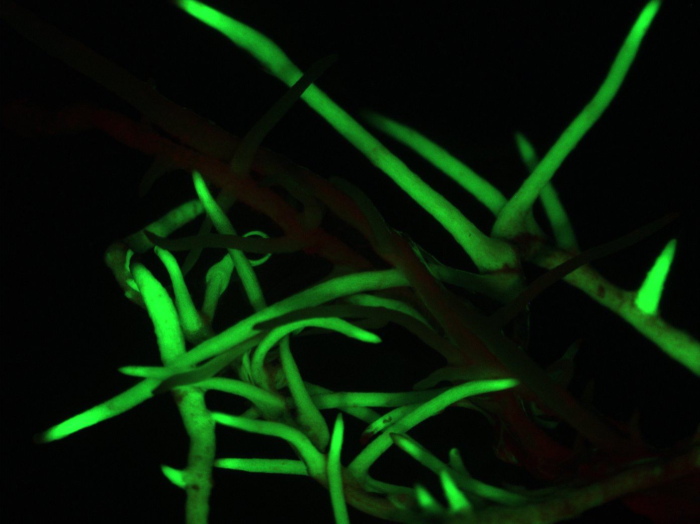
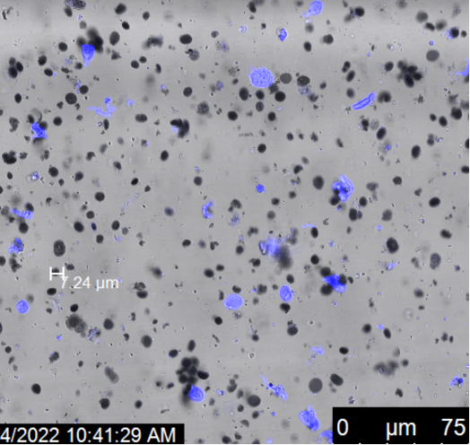
Let’s connect